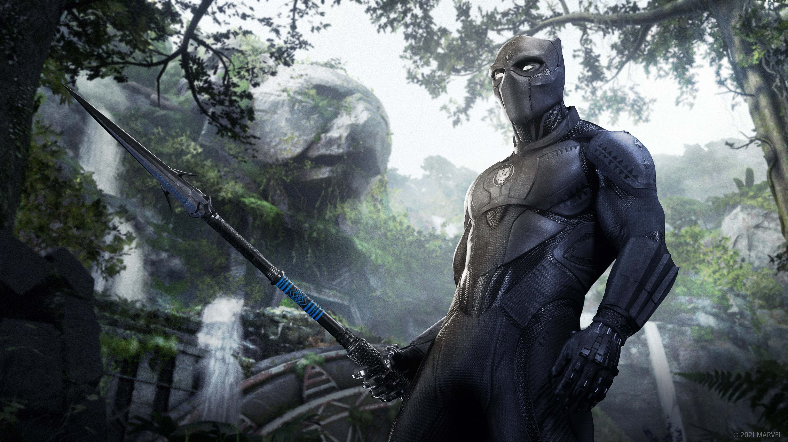
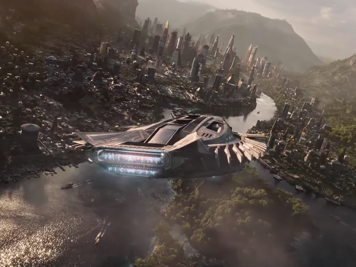
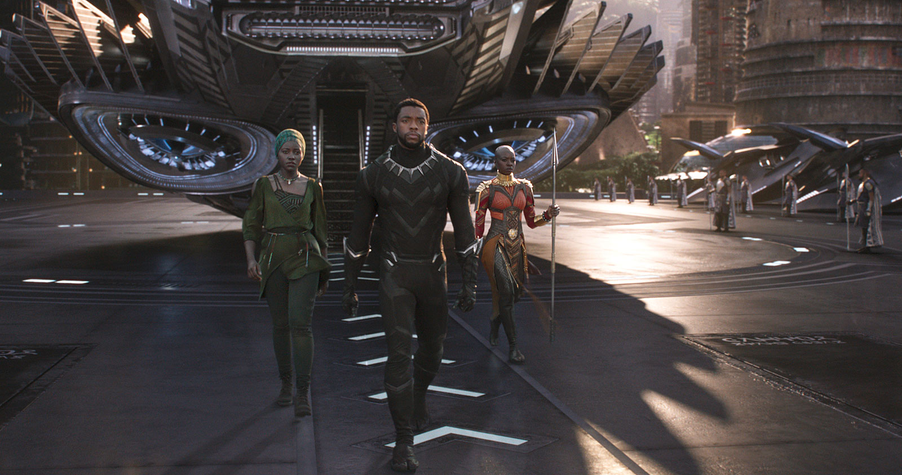

Title
BLACK PANTHER
Actors
Chadwick Boseman as T'Challa / Black Panther, Michael B. Jordan as N'Jadaka / Erik "Killmonger" Stevens,Lupita Nyong'o as Nakia, Lupita Nyong'o as Nakia, Danai Gurira as Okoye etc.
The film was released in 2018
Synopsis
Black Panther is a 2018 American superhero film based on the Marvel Comics character of the same name. Produced by Marvel Studios and distributed by Walt Disney Studios Motion Pictures, it is the 18th film in the Marvel Cinematic Universe (MCU). The film was directed by Ryan Coogler, who co-wrote the screenplay with Joe Robert Cole, and it stars Chadwick Boseman as T'Challa / Black Panther alongside Michael B. Jordan, Lupita Nyong'o, Danai Gurira, Martin Freeman, Daniel Kaluuya, Letitia Wright, Winston Duke, Angela Bassett, Forest Whitaker, and Andy Serkis. In Black Panther, T'Challa is crowned king of Wakanda following his father's death, but he is challenged by Killmonger (Jordan) who plans to abandon the country's isolationist policies and begin a global revolution. Wesley Snipes planned to make a Black Panther film in 1992, but the project did not come to fruition. In September 2005, Marvel Studios listed a Black Panther film as one of ten films based on Marvel characters intended to be distributed by Paramount Pictures. Mark Bailey was hired to write a script in January 2011. Black Panther was officially announced in October 2014, and Boseman made his first appearance as the character in Captain America: Civil War (2016). Cole and Coogler had joined by then, with additional casting in May. Black Panther is the first Marvel Studios film with a Black director and a predominantly Black cast. Principal photography took place from January to April 2017 at EUE/Screen Gems Studios in the Atlanta metropolitan area, and in Busan, South Korea.
Age Restriction
16
  